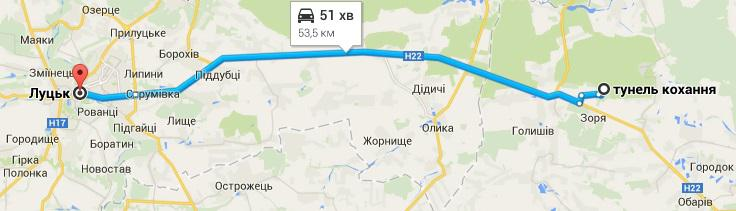

Тунель кохання
1. За однією з легенд, цей тунель отримав назву завдяки трагічній історії двох закоханих. Батьки були проти їх шлюбу, через що вбита горем дівчина кинулась на колію та загинула. Хлопець намагався знайти її, але все було даремно. Довго бродив у місцевому лісі й гукав свою кохану, аж поки сам і не заблукав. Так з того часу навколо залізної дороги виріс тунель кохання, в якому до наших днів душі закоханих шукають одне одного.
2. Цю дорогу побудували для потреби армії, а ліс посадили щоб приховати рух потягу та його вантаж. Неподалік від залізної дороги працював деревообробний комбінат, працівники якого регулярно спилювали верхівки дерев. Після закриття комбінату доглядати за насадженнями було нікому, і вони зрослися, утворивши своїми гілками зелений коридор.
